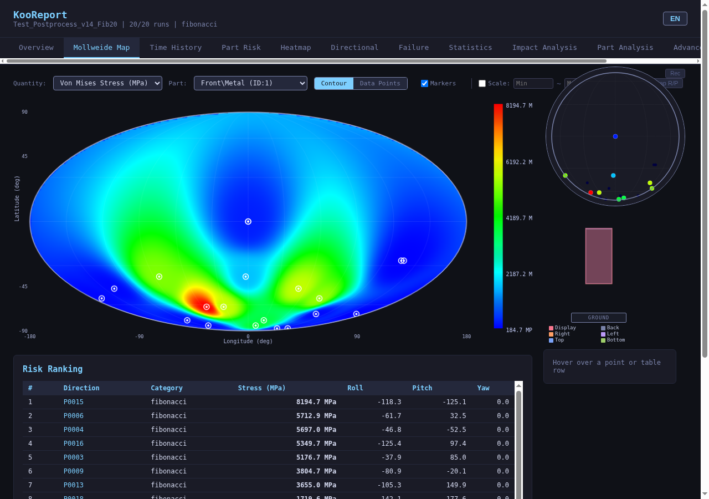
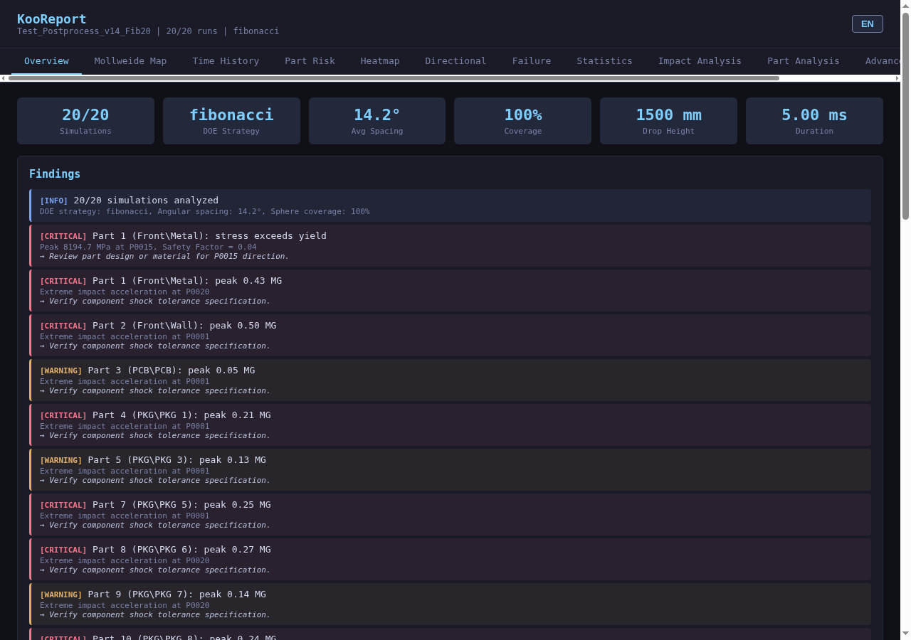
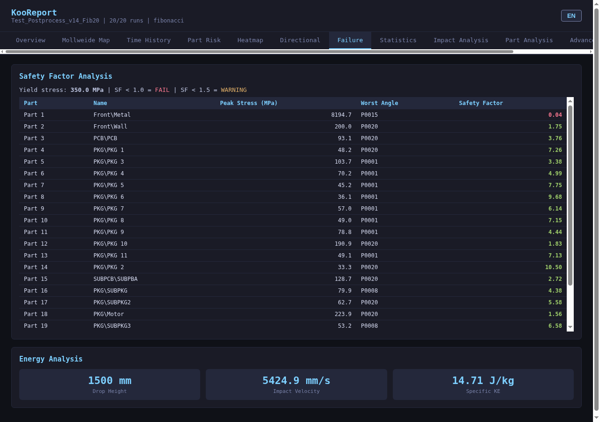
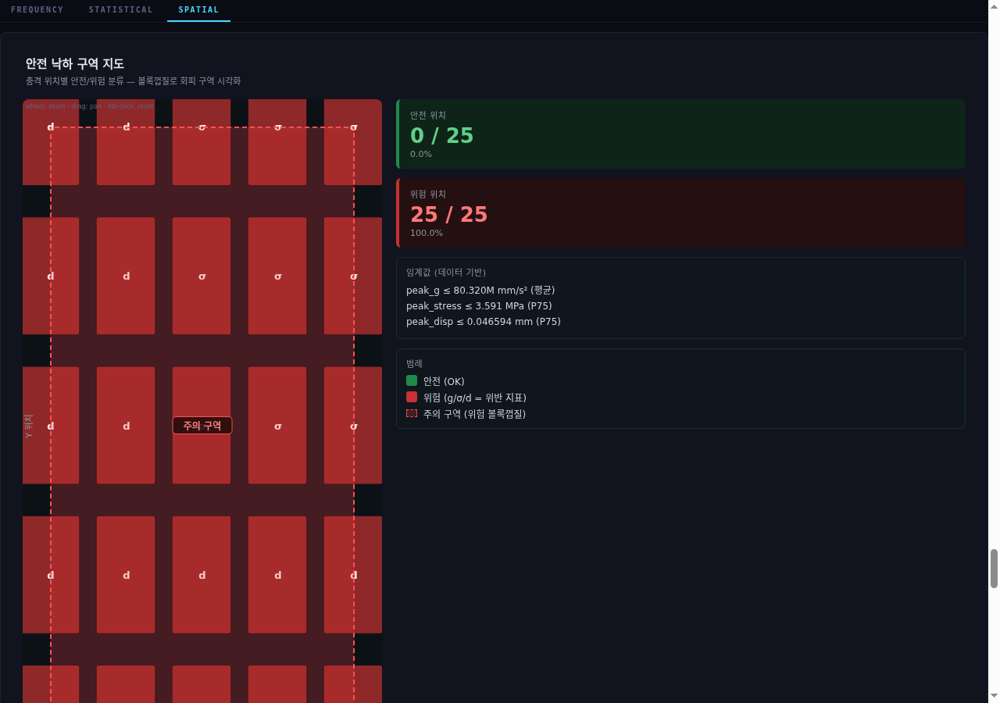
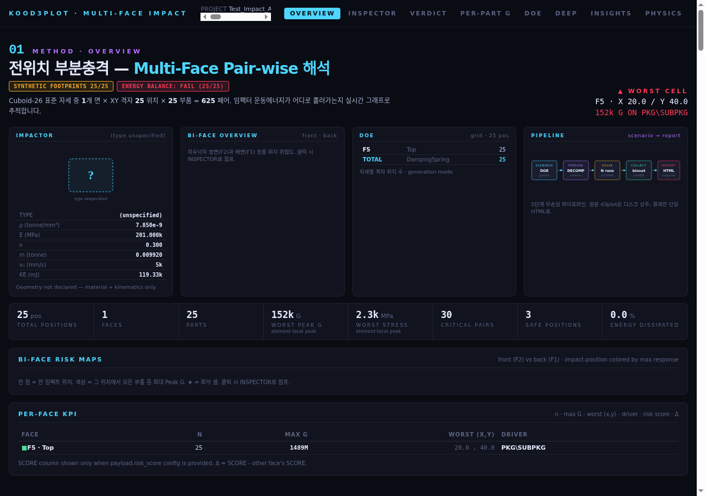

제품 하나를 받아 수백~수천 가지 충격 시나리오를 자동으로 돌리고,
위험한 자세와 위치를 통계로 짚어내는 자동화 해석 체계
한 번의 낙하 시험으로는 "그 자세에서 안 깨졌다"만 알 수 있습니다.
실제 낙하는 무작위 자세로 떨어집니다. 6면 낙하만 검증하면 모서리·꼭짓점처럼 응력이 집중되는 자세를 놓칩니다.
부분 충격은 어디를 맞느냐로 결과가 뒤집힙니다. 대표점 몇 개로는 가장 취약한 지점을 특정할 수 없습니다.
자세 500가지를 손으로 만들면 모델링·제출·수집에만 수 주가 걸립니다. 실수도 그만큼 늘어납니다.
구면을 균등하게 덮는 자세 집합을 자동 생성합니다. 면·모서리·꼭짓점 26방향을 시드로 먼저 배치하고 그 사이를 채우는 방식도 지원해, 표준 시험 자세를 반드시 포함시킬 수 있습니다.
120개를 먼저 돌려 경향을 보고, 이어서 500·1000개로 넓힐 수 있습니다. 이전 단계 위치는 그대로 두고 빈틈만 채우므로 재계산이 없습니다.
파트별 최대 응력·소성변형률·가속도와 안전계수(항복응력÷피크응력)를 전 케이스에 대해 산출하고, 항복 예상 파트를 자동 경고합니다.
같은 설정이면 같은 자세 집합이 나옵니다. 설계 변경 전후를 동일 조건에서 직접 비교할 수 있습니다.
scenario.json.
바닥판, 초기 속도, 접촉, 출력 카드는 모두 자동으로 만들어집니다. (→ 6·7페이지)
제품을 모든 자세로 떨어뜨려 가장 위험한 방향을 찾습니다.
제품 자세를 Roll·Pitch·Yaw 로 바꿔가며 같은 높이에서 떨어뜨립니다. 자세 하나가 해석 케이스(DOE) 하나입니다. 구(球) 표면 위의 한 점이 낙하 방향 하나에 대응하므로, 구면을 얼마나 촘촘히 덮느냐가 곧 검증 밀도입니다.
| 방식 | 케이스 수 | 쓰임새 |
|---|---|---|
cuboid_geometry | 최대 26 면6+모서리12+꼭짓점8 | 표준 낙하 시험 대응. 가장 기본이며 기본값입니다. |
fibonacci_lattice | 임의 (26~41,253) | 전각도 낙하의 주력. 구면 균등 분포를 원하는 개수만큼 생성합니다. |
pitching_sweep | 기본 19 | Pitch 만 −90°~90° 훑기. 특정 축 경향 분석용. |
rolling_sweep | 기본 36 | Roll 만 −180°~170° 훑기. |
case_txt_file | 파일에 따름 | 기존 각도 목록 파일 재사용. 특정 인덱스만 골라 쓸 수도 있습니다. |
낙하 자세는 실제 충격 방향이 고르게 퍼져야 의미가 있습니다. 방향들 사이 각거리를 재보면 구성에 따라 결과가 크게 다릅니다. (N=100 기준 실측)
| 구성 | 최소 간격 | 중앙 | 최대 | 최대÷최소 | 중복 방향 |
|---|---|---|---|---|---|
| 구 방식 (위도·경도 균등) | 0.41° | 5.09° | 26.70° | 65.6배 | 2쌍 |
| 기본값 (실제 낙하 방향 균등) | 17.78° | 19.39° | 19.73° | 1.1배 | 0 |
| 표준 26자세 + 채움 | 10.80° | 16.91° | 21.57° | 2.0배 | 0 |
면 6 · 모서리 12 · 꼭짓점 8 = 표준 26자세를 반드시 포함시키고, 나머지를 균등 분포에서 가져와 채웁니다. 100개면 26 + 74 입니다. 표준 낙하 시험과 대조해야 할 때 씁니다.
단계적 확장. [120, 500] + num_points: 1000 이면
이미 돌린 500개를 재현해 제외하고 신규 500개만 내보냅니다.
구 방식으로 되돌립니다. 과거에 돌린 결과와 각도를 맞춰야 할 때만 쓰십시오. 신규 프로젝트에는 권장하지 않습니다.
작게 시작해 필요하면 넓히는 방식이 가능합니다. 단계 목록만 선언하면 어느 경로로 확장하든 누적 위치 집합이 항상 동일합니다.
# 1단계 — 경향 파악 num_points: 120 # 2단계 — 빈틈 채우기 (신규 380개) num_points: 500 previous_stages: [120] # 3단계 — 정밀화 (신규 500개) num_points: 1000 previous_stages: [120, 500]
대가는 균일도가 약간 낮아지는 것입니다. 실측값입니다.
| 구성 | 최소 간격 | 중앙값 |
|---|---|---|
| 누적 1000 (120→500→1000) | 3.15° | 4.73° |
| 정규 1000 (한 번에) | 5.60° | 6.10° |
120 → 500 을 돌려놓고 previous_stages: [500] 이라고만 적으면 재현이 어긋나
1000개 중 4개가 1° 이내로 겹칩니다. 로그의 "재현 누적 N개" 가 실제 돌린 개수와 같은지 확인하십시오.
케이스별 상세 리포트와, 전 각도를 가로지르는 통합 리포트가 나옵니다.
sphere_report 는 각 케이스의 deep_report 결과를 모아 집계합니다.
deep 이 없으면 "정상 종료 시뮬 0개" 로 건너뜁니다. 정상 종료(Normal termination)한 케이스만 통계에 들어갑니다.최대 Von Mises 응력과 그 파트 ID, 최대 소성변형률, 최대 변위, 에너지 보존율 최소값(1에서 크게 벗어나면 해석 불안정 신호).
피크 응력과 도달 시각, 소성변형률, 변위, 가속도, 안전계수, 주응력 σ₁/σ₃, 피크 요소 번호까지.
파트별 응력·변형률·주응력 이력과 에너지 이력(운동/내부/총/비율)을 CSV 와 JSON 으로 제공합니다.
모델을 잘라 응력을 색칠한 mp4. 전체 단면 1개 + 파트별 단면이 생성됩니다.
report.html 탭 Overview · 운동 · 응력/변형률 · 응력 텐서 · 에너지 · 부품 Deep Dive · 시스템 정보



| 탭 | 보여주는 것 |
|---|---|
| Overview | Findings — 자동 판정 경고. CRITICAL "항복 초과", WARNING "과대 충격 가속도" 등을 심각도·원인·권고와 함께 나열합니다. |
| Mollweide Map | 구면 분포도. 전 낙하 방향을 지도처럼 펼쳐 위험도를 등고선으로 칠하고 실제 케이스를 점으로 찍습니다. 회전하는 3D 구체와 방향별 위험 순위표가 함께 붙습니다. |
| Part Risk | 파트별 전 방향 중 최악값. 어느 부품이 어느 자세에서 가장 위험한지 한 줄로 정리됩니다. |
| Heatmap | 파트 × 방향 행렬을 색으로. 응력·가속도·변형률·변위·속도를 전환할 수 있고 Top 20 값 표가 따라옵니다. |
| Directional | 면/모서리/꼭짓점 카테고리 비교, 총응력 기준 방향 순위, 축 우세도, 대칭성 분석(앞↔뒤·좌↔우·위↔아래 3쌍의 비대칭도로 모델·메시 편향을 잡아냅니다). |
| Failure | 항복 판정. 안전계수 = 항복응력 ÷ 피크응력 으로 SF>1.5 안전 / 1.0~1.5 한계 / <1.0 항복예상 3색 구분. |
| Statistics | 파트별 기술통계, 응력↔G 상관, 속도↔응력 상관, 최대G 도달시간 산점도. |
| Advanced | 충격 펄스 특성화, 핫스팟 빈도 추적, 에너지 흡수, 리바운드 정량화, 물리량 상관 매트릭스 등 심화 7종. |
yield_stress_mpa 를 지정하지 않으면 SF 가 계산되지 않습니다.
다만 이 값은 전 파트에 동일하게 적용되므로, 재질이 섞인 모델은 파트별 항복값을 별도로 주는 편이 정확합니다.제품 표면 곳곳을 때려 가장 취약한 지점을 찾습니다.
제품은 고정하고 충격추(impactor)를 떨어뜨립니다. 때리는 (x, y) 위치 하나가 케이스 하나입니다. 낙하가 "어느 자세로 떨어지나"를 훑는다면, 부분충격은 "어디를 맞으면 위험한가"를 훑습니다.
| 전각도 낙하 | 전위치 부분충격 | |
|---|---|---|
| 훑는 대상 | 자세 (Roll/Pitch/Yaw) | 위치 (x, y) |
| 설정 키 | angle_source | position_source |
| 움직이는 것 | 제품이 떨어짐 | 충격추가 떨어짐 |
| 자세각 | 케이스마다 다름 | 전부 0 고정 |
| 받침 | drop_surface 바닥판 | wall 받침판 |
| 물성 위치 | simulation_params 최상위 | simulation_params.impact |
| 통합 보고서 | sphere_report | impact_report |
| 방식 | 설명 |
|---|---|
grid_nxm기본값 | nx × ny 균등 격자. 범위(bbox)를 생략하면 모델 전체에서 자동 계산합니다. 5×5 = 25 케이스. |
grid_spacing | 간격(mm)으로 지정. 제품 크기가 달라도 동일한 밀도를 유지합니다. |
manual | 좌표를 직접 나열. 커넥터·버튼 등 특정 지점만 집중 검증할 때. |
"position_source": { "source_type": "grid_nxm", "grid_nxm": { "nx": 5, "ny": 5, "bbox": [-40, -40, 40, 40] } }, "simulation_params": { "impact": { "type": "Sphere", // 충격추 형상 "dimension": 8, // 지름 8 mm "height": 500, // 낙하 높이 500 mm → 속도 자동 계산 "mesh_size": 1, // 충격추 메시 크기 "density": 7.85e-9, // 강 (ton/mm³) "youngs_modulus": 201000, // MPa "tFinal": 0.001, "dt": 1e-6 }, "wall": { "density": 1e-9, "youngs_modulus": 10000 } // 받침판 }
impact 하위 값의 기본값은 SI(m) 기준입니다(dimension 0.008, height 0.5).
ton-mm-s 모델에서 생략하면 1000배 작은 충격추가 만들어집니다. 반드시 명시하십시오.height 에서 자동 계산됩니다.
속도를 직접 지정할 수는 없습니다.위치 × 부품 조합 전체를 훑어 취약 지점을 짚어냅니다.
통합 리포트의 뼈대는 (위치 × 부품) 격자입니다. 조합마다 4개 지표가 기록됩니다.

g/σ/d 는
어느 지표가 기준을 넘겼는지를 나타냅니다.
| 섹션 | 보여주는 것 |
|---|---|
| 안전 낙하 구역 지도 | 제품 표면을 안전/주의/위험 구역으로 색칠합니다. 가장 직관적인 결과물로, 어디를 보강해야 하는지 바로 드러납니다. |
| Impact Inspector | 충격 위치에 마우스를 올리면 그 위치에서의 부품별 응답이 즉시 표시됩니다. |
| 최악 25 조합 | (위치 × 부품) 조합을 심각도 순으로 세운 표. 보고서에서 가장 먼저 볼 곳입니다. |
| Verdict · 에너지 흐름 | 다기준 합격/불합격 판정과 충격 에너지가 어느 부품으로 흘러 흡수되는지. |
| FFT 스펙트럼 · SRS | 주파수 영역 분석과 충격응답스펙트럼. 전자부품 손상 평가에 쓰이는 표준 지표입니다. |
| 반발계수 · 댐핑 | 위치별 반발계수(COR)와 부품별 감쇠·회복 시간. |
| 충격파 전파 속도 | 충격이 구조를 타고 퍼지는 속도. 경로상 부품의 시간차 응답을 설명합니다. |
| 대칭성 · 경계 효과 | 대칭이어야 할 위치의 응답 차이로 모델 편향이나 경계조건 문제를 잡아냅니다. |
| 이상치 자동 검출 | 주변과 동떨어진 응답을 보이는 위치를 자동으로 표시합니다. 국부 취약점 또는 메시 문제 신호입니다. |
| PCA 모달 분해 | 전체 응답을 주성분으로 분해해 지배적인 변형 모드를 추출합니다. |
| 엔지니어링 자동 권고 | 위 분석을 종합한 개선 방향 제안. |
| 3D 트래젝터리 | 부품 운동 궤적을 3D 로 겹쳐 표시. |
deep_report(응력 이력·에너지·단면 애니메이션)가 생성됩니다.
통합 리포트에서 특정 위치가 의심되면 그 케이스의 상세 리포트로 바로 파고들 수 있습니다.impact_yield_stress 를 지정하면 그 값으로, 생략하면 모델의 파트별 재료 카드 값으로 판정합니다.
재질이 섞인 제품은 생략하는 편이 오히려 정확할 수 있습니다.낙하·충격 조건이 없는 순수 모델 한 벌 + scenario.json 한 장.
| 카드 | 요건 |
|---|---|
*NODE | 필수 없으면 즉시 중단됩니다. |
*ELEMENT_* | 필수 SOLID / SHELL / BEAM / MASS 중 최소 1종. |
*PART | 필수 제목줄 + 데이터줄 2줄 쌍 구조. 제목이 비어도 줄 자체는 있어야 합니다. |
*SECTION_* | 필수 PART 의 SECID 에 대응. |
*MAT_* | 필수 PART 의 MID 에 대응. 밀도·탄성계수가 있어야 합니다. |
| 파트 간 접촉 | 필수 제품 내부 부품끼리의 접촉은 모델에 있어야 합니다. 자동 생성되는 것은 제품↔바닥판 접촉뿐입니다. |
*INITIAL_VELOCITY — 자동 생성분과 중복 적용됩니다*BOUNDARY_SPC — 자유낙하가 막힙니다| 자동 | 바닥판 파트·절점·요소 (크기·메시 자동 산정) |
| 자동 | 바닥판 전용 단면·재료·하면 구속 |
| 자동 | 낙하 높이 → 초기 속도·각속도 |
| 자동 | 제품 ↔ 바닥판 접촉 |
| 자동 | 해석 종료 시간, d3plot 등 출력 카드 |
| 자동 | 누적 해석용 응력 이월 카드 |
| 보존 | *CONTROL_* 정밀도 설정 — 의뢰 모델 값이 우선 |
| 보존 | *DATABASE_EXTENT_BINARY (STRFLG 등) |
| 보존 | 기존 Tied 접촉, 감쇠, 세트, 타이틀 |
| 보존 | *KEYWORD 옵션(I10=Y 등), *PARAMETER |
*DATABASE_EXTENT_BINARY 의 STRFLG 를 모델에 직접 넣어 주십시오.
이 카드는 자동 생성하지 않으며, 넣으신 값은 전 과정에서 그대로 유지됩니다.파트·재료·단면·내부 접촉 포함. 낙하/충격 조건 없음. 단위 ton-mm-s.
다음 페이지의 표에서 필수 항목만 채우면 됩니다.
항복응력을 알려주시면 안전계수·항복 판정이 리포트에 포함됩니다.
빈칸을 채우는 방식입니다. 필수 표시만 채우면 나머지는 기본값으로 동작합니다.
"project_name": "____", "simulation_params": { "height": 1500, // 낙하 높이 (mm) "tFinal": 0.005, // 해석 시간 (s) "dt": 1e-6 // 출력 간격 (s) }, "scenarios": [{ "template": "____.k", // 제출 모델 "angle_source": { "source_type": "fibonacci_lattice", "fibonacci_lattice": { "num_points": 500 // 검증할 자세 개수 — 이것만 정하면 됩니다 } }, "cumulative": { "num_steps": 1, "mode_sequence": ["DROP"] } }]
"simulation_params": { "impact": { "type": "Sphere", "dimension": 8, // 충격추 형상·지름(mm) "height": 500, "mesh_size": 1, // 낙하높이(mm)·메시(mm) "density": 7.85e-9, "youngs_modulus": 201000, "tFinal": 0.001, "dt": 1e-6 }, "wall": { "density": 1e-9, "youngs_modulus": 10000 } }, "scenarios": [{ "template": "____.k", "position_source": { "source_type": "grid_nxm", "grid_nxm": { "nx": 5, "ny": 5 } // bbox 생략 시 모델에서 자동 }, "cumulative": { "num_steps": 1, "mode_sequence": ["IMPACT"] } }]
| 항목 | 의미 | 기본값 |
|---|---|---|
height | 낙하 높이 (mm) | 1500 |
tFinal | 해석 종료 시간 (s) | 0.005 |
dt | 결과 출력 간격 (s) | 1e-6 |
offset_distance | 제품–바닥판 초기 간격 (mm) | 0.05 |
density / youngs_modulus / poisson_ratio | 바닥판 물성 (제품 물성 아님) | 7.85e-9 / 2.0e5 / 0.3 |
drop_surface | 바닥면 종류 — 평판 / 외곽 성긴 평판 / 무한 강체벽 / 거친 면 | 평판 |
| 항목 | 의미 | 기본값 |
|---|---|---|
source_type | 자세 생성 방식 (2페이지 표 참조) | cuboid_geometry (26방향) |
num_points | 필수 검증할 자세 개수 | 26 |
sampling_space | 보통 생략합니다. 과거 결과와 각도를 맞출 때만 "latlon" | 실제 충격 방향 균등 |
principal_directions | 표준 자세를 반드시 포함 — faces(6) / faces_corners(14) / cuboid26(면6+모서리12+꼭짓점8) | 사용 안 함 |
previous_stages | 단계적 확장 — 이미 돌린 누적 개수를 오름차순으로 | 사용 안 함 |
| 항목 | 의미 | 기본값 (⚠ SI 기준) |
|---|---|---|
impact.type | 충격추 형상 — Sphere 또는 cylinder | Sphere |
impact.dimension | 필수 충격추 치수 (mm) | 0.008 ← m 기준 |
impact.height | 필수 충격추 낙하 높이 (mm) | 0.5 ← m 기준 |
impact.mesh_size | 필수 충격추 메시 크기 (mm) | 0.001 ← m 기준 |
impact.density 등 | 충격추 재질 | 강 (7.85e-9 / 2.01e5 / 0.3) |
impact.cylinder_stages | 다단 원통 정의 (앞/중간/뒤) | 사용 안 함 |
wall.* | 받침판 물성 | 1e-9 / 1e4 / 0.3 |
| 항목 | 의미 | 기본값 |
|---|---|---|
grid_nxm.nx / ny | 격자 분할 수 → 케이스 수 = nx × ny | 5 × 5 = 25 |
grid_nxm.bbox | 격자 범위 [xmin,ymin,xmax,ymax] | 모델에서 자동 계산 |
grid_spacing.spacing_x/y | 간격 지정 방식 (mm) | — |
manual.positions | 좌표 직접 나열 [[x,y],...] | — |
| 항목 | 의미 | 기본값 |
|---|---|---|
dtmin | 시간증분 붕괴 시 자동 종료. 발산 케이스가 무한정 도는 것을 막습니다. | 사용 안 함 |
dynamic_relaxation | 누적 해석에서 단계 사이 안정화 | false |
robust_contact | 접촉 재구성 — 접촉 불안정으로 실패할 때 | false |
include_wall_in_general | 바닥판을 기존 전역 접촉에 포함 | false |
postprocess.yield_stress_mpa | 항복응력 (MPa). 안전계수·항복 판정에 사용 | 미지정 시 판정 없음 |
num_steps 를 2 이상으로 두면 1차 낙하의 손상을 안고 2차 낙하를 수행합니다.
반복 낙하 시험을 모사할 때 사용합니다.실제 제품 해석 결과를 이 페이지에 추가합니다.
실제 프로젝트 적용 결과 · 리포트 화면 · 도출된 개선안
대상 제품 / 검증 자세 수 / 발견된 위험 자세 / 항복 판정 결과 / 설계 반영 내용
대상 제품 / 검증 위치 수 / 취약 지점 / 안전 구역 지도 / 보강 방안
모델 제출 방법이나 scenario.json 작성에 대해 궁금한 점은 담당자에게 문의해 주십시오.
모델만 주시면 설정 파일 작성까지 지원해 드립니다.